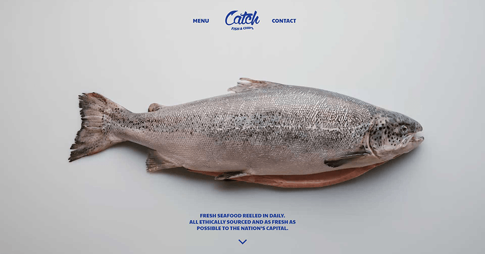
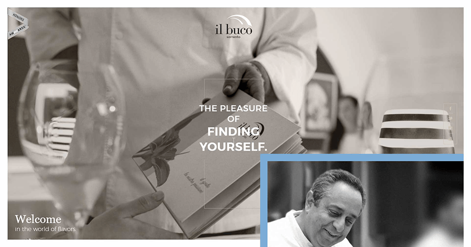
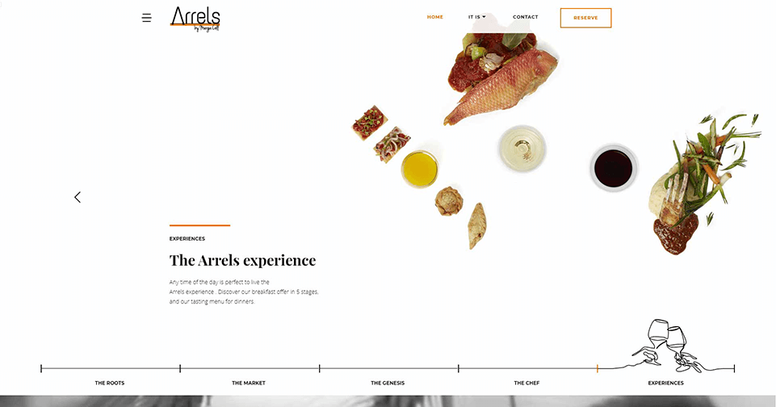
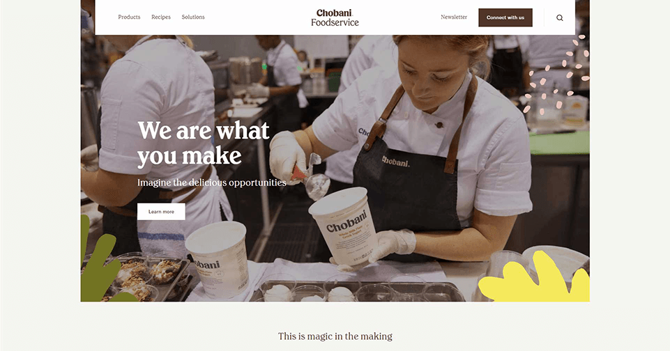

Inavoue is such a beautiful website. The design of this website is very elegant from the colors to the small animations adds to beauty of this website. There are so many great small interactions. Overall, I think what this website does very well is not to overuse animations and interactions.

Catch
Fish & Chips
This website does a great job of using parallax scrolling. Like that of the Apple Product websites, it is using a scrolling technique that reveals more a story through scrolling. Very clean and reduces clutter.

Il Buco Sorrento
The il buco website’s layout is amazing. The layout is unique and showcases the content of the company is such a refreshing way. However, I am not a huge fan of their logo, I really like how their usage of photography, immersion, and the color scheme throughout the website.

Arrels
The Arrels website is very clean and has a great usage of motifs. I like how the logos design and identity is reflected throughout the landing page and website.

Chobani Foodservice
Even though the Chobani Foodservice isn’t totally a restaurant, I think this website does a great job of showcasing food in a simplistic and beautiful way. I really like how the visual identity of the brand is shown through out the website, and there is no visual clutter.